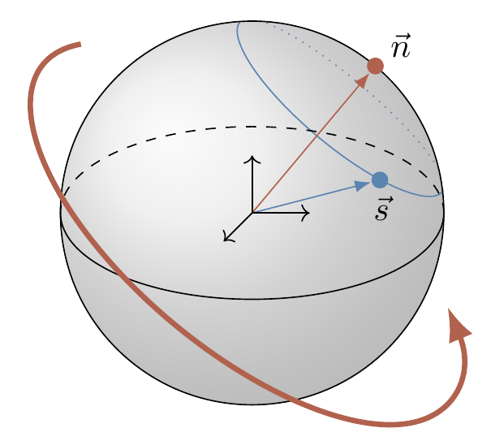

More about the Bloch sphere, via the omnipresent Pauli matrices, which can be described in a more algebraic way.
Let us further investigate the relations between single qubit unitary transformations, Pauli matrices, and rotations of regular three-dimensional vectors. The goal is to be able to visualise sequences of unitary operations on a qubit as sequences of rotations, and to see the action of some quantum circuits without getting engaged in lengthy calculations.
Matrices form a vector space: you can add them, and you can multiply them by a scalar. One possible choice of a basis in the vector space of \((2\times 2)\) matrices is the set of matrices \(\{M_{00},M_{01},M_{10},M_{11}\}\), where the entries of \(M_{ij}\) are all \(0\) except for the \(ij\)-th entry, which is \(1\). However, it turns out that there is a different basis which offers lots of insights into the structure of the general single-qubit unitary transformations, namely \(\{\operatorname{id},X,Y,Z\}\), i.e. the identity matrix and the three Pauli matrices.
| \(\operatorname{id}\) | \(X=\sigma_x\) | \(Y=\sigma_y\) | \(Z=\sigma_z\) |
|---|---|---|---|
| \(\begin{bmatrix}1&0\\0&1\end{bmatrix}\) | \(\begin{bmatrix}0&1\\1&0\end{bmatrix}\) | \(\begin{bmatrix}0&-i\\i&0\end{bmatrix}\) | \(\begin{bmatrix}1&0\\1&-1\end{bmatrix}\) |
Recalling Pauli operators, we know that the Pauli operators (as well as the identity operator) are unitary and Hermitian, square to the identity, and anti-commute.
Any \((2\times 2)\) complex matrix \(A\) has a unique expansion in the form \[\begin{equation} \begin{aligned} A &= \begin{bmatrix} a_0 + a_z & a_x - i a_y \\a_x +i a_y & a_0 - a_z \end{bmatrix} \\&= a_0\operatorname{id}+ a_x \sigma_x + a_y \sigma_y + a_z \sigma_z \\&= a_0\operatorname{id}+ \vec{a}\cdot\vec{\sigma}. \end{aligned} \tag{3.1} \end{equation}\] for some complex numbers \(a_0\), \(a_x\), \(a_y\), and \(a_z\). Here, \(\vec{a}\) is a vector with three complex components \((a_x, a_y, a_z)\), and \(\vec{\sigma}\) represents the “vector” of Pauli matrices \((\sigma_x,\sigma_y,\sigma_z)\). The algebraic properties of the Pauli matrices can be neatly compacted (see the exercises) into a single expression:
The multiplication rule: \[ (\vec{a}\cdot\vec{\sigma})\,(\vec{b}\cdot\vec{\sigma}) = (\vec{a}\cdot\vec{b})\,\operatorname{id}+ i(\vec{a}\times \vec{b})\cdot\vec{\sigma}. \]
We also introduce the inner product of two matrices:
The Hilbert–Schmidt product: \[ (A|B) = \frac12 \operatorname{tr}A^\dagger B. \]
Recall that the trace of a square matrix \(A\), denoted by \(\operatorname{tr}A\), is defined to be the sum of the elements on the main diagonal of \(A\), and defines a linear mapping: for any scalars \(\alpha\) and \(\beta\), \[ \operatorname{tr}(\alpha A+\beta B) = \alpha\operatorname{tr}A +\beta\operatorname{tr}B. \] Moreover, the trace is invariant under cyclic permutations: e.g. \[ \operatorname{tr}(ABC) = \operatorname{tr}(BCA) = \operatorname{tr}(CAB). \] Note, however, that this does not imply that e.g. \(\operatorname{tr}(ABC)=\operatorname{tr}(ACB)\).
Show that \(\{\operatorname{id},\sigma_x,\sigma_y,\sigma_z\}\) is an orthonormal basis with respect to the Hilbert-Schmidt product in the space of complex \((2\times 2)\) matrices.
Show that the coefficients \(a_k\) (for \(k=x,y,z\)) in Equation (3.1) are given by the inner product \(a_k = (\sigma_k|A) = \frac12\operatorname{tr}\sigma_k A\).
Show that \(\frac12\operatorname{tr}(\vec{a}\cdot\vec{\sigma})(\vec{b}\cdot\vec{\sigma}) = \vec{a}\cdot\vec{b}\).
Show that any \(\vec{n}\cdot\vec{\sigma}\) has eigenvalues are \(\pm|\vec{n}|\).
Show that, if \(\vec{n}\cdot\vec{m}=0\), then the operators \(\vec{n}\cdot\vec{\sigma}\) and \(\vec{m}\cdot\vec{\sigma}\) anticommute.
In these notes, we usually deal with matrices that are Hermitian (\(A=A^\dagger\)) or unitary (\(AA^\dagger=\operatorname{id}\)). It is easy to see that, if \(A\) is Hermitian, then \(a_0\) and the three components of \(\vec{a}\) are all real. The \((2\times 2)\) unitaries are usually parametrised as \[ U = e^{i\gamma}\Big(u_0\operatorname{id}+ i(u_x\sigma_x + u_y\sigma_y + u_z\sigma_z)\Big) \] where \(e^{i\gamma}\) is an overall multiplicative phase factor, with \(\gamma\) real, and \(u_0\) and the three components \(u_x\), \(u_y\), \(u_z\) are all real numbers.
Show that the unitarity condition implies that \[ u_0^2 + u_x^2 + u_y^2 + u_z^2 = 1, \] and show that the determinant of \(U\) is \(e^{i2\gamma}\) using this parametrisation.
Geometrically speaking, the group of unitaries \(\mathrm{U}(2)\) is a three-dimensional sphere \(S^3\) in \(\mathbb{R}^4\). We often fix the determinant to be \(+1\) and express \((2\times 2)\) unitaries as \[ U = u_0\operatorname{id}+ i(u_x\sigma_x + u_y\sigma_y + u_z\sigma_z). \] Such matrices form a popular subgroup of \(\mathrm{U}(2)\); it is called the special (meaning the determinant is equal to \(1\)) unitary group, and denoted by \(\mathrm{SU}(2)\). In quantum theory, any two unitary matrices that differ by some global multiplicative phase factor represent the same physical operation, so we are “allowed to” fix the determinant to be \(+1\), and thus restrict ourselves to considering matrices in \(\mathrm{SU}(2)\). This is a sensible approach, practised by many theoretical physicists, but again, for some historical reasons, the convention in quantum information science does not follow this approach. For example, phase gates are usually written as \[ P_\alpha = \begin{bmatrix}1&0\\0&e^{i\alpha}\end{bmatrix} \] rather than \[ P_\alpha = \begin{bmatrix}e^{-i\frac{\alpha}{2}}&0\\0&e^{\,i\frac{\alpha}{2}}\end{bmatrix} \] Still, sometimes the \(T\) gate \[ T = \begin{bmatrix}1&0\\0&e^{i\pi/4}\end{bmatrix} = \begin{bmatrix}e^{-i\pi/8}&0\\0&e^{i\pi/8}\end{bmatrix} \] is called the \(\pi/8\) gate, because of its \(\mathrm{SU}(2)\) form.
Let us write any \((2\times 2)\) unitary, up to an overall phase factor, as \[ U = u_0\operatorname{id}+ i(u_x \sigma_x + u_y \sigma_y + u_z \sigma_z) = u_0\operatorname{id}+ i{\vec{u}}\cdot{\vec{\sigma}} \] where \(u_0^2+|\vec{u}|^2=1\). This additional unitarity restriction allows us to parametrise \(u_0\) and \(\vec{u}\) in terms of a real unit vector \(\vec{n}\), parallel to \(\vec{u}\), and a real angle \(\theta\) so that42 As you can see, we often make progress and gain insights simply by choosing a convenient parametrisation. \[ U = (\cos\theta)\operatorname{id}+ (i\sin\theta){\vec{n}}\cdot{\vec{\sigma}}. \] An alternative way of writing this expression is \[ U = e^{i\theta {\vec{n}}\cdot{\vec{\sigma}}}, \] as follows from the power-series expansion of the exponential. Indeed, any unitary matrix can always be written in the exponential form as \[ \begin{aligned} e^{iA} &\equiv \operatorname{id}+ iA + \frac{(i A)^2}{1\cdot 2} + \frac{(i A)^3}{1\cdot 2\cdot 3} \ldots \\&= \sum_{n=0}^\infty \frac{(i A)^n}{n!} \end{aligned} \] where \(A\) is a Hermitian matrix.
Writing unitary matrices in the form \(e^{iA}\) is analogous to writing complex numbers of unit modulus as \(e^{i\alpha}\) (the so-called polar form).
Here comes a remarkable connection between two-dimensional unitary matrices and ordinary three-dimensional rotations.
The unitary \(U = e^{i\theta \vec{n}\cdot\vec{\sigma}}\) represents a clockwise rotation through the angle \(2\theta\) about the axis defined by \(\vec{n}\).
(N.B. \(2\theta\), not \(\theta\)).
For example, \[ \begin{gathered} e^{i\theta\sigma_x} = \begin{bmatrix} \cos\theta & i\sin\theta \\i\sin\theta & \cos\theta \end{bmatrix} \qquad e^{i\theta\sigma_y} = \begin{bmatrix} \cos\theta & \sin\theta \\-\sin\theta & \cos\theta \end{bmatrix} \\e^{i\theta\sigma_z} = \begin{bmatrix}e^{i\theta}&0\\0&e^{-i\theta}\end{bmatrix} \end{gathered} \] represent rotations by \(2\theta\) about the \(x\)-, \(y\)- and \(z\)-axis, respectively.
Figure 3.1: \(e^{i\theta\vec{n}\cdot\vec{\sigma}}\) rotates the vector \(\vec{s}\) about \(\vec{n}\) by angle \(2\theta\), sending it to a point on the blue circle, whose centre is passed through by \(\vec{n}\).
The Hadamard gate \[ \begin{aligned} H &= \frac{1}{\sqrt 2} \begin{bmatrix} 1& 1 \\1 & -1 \end{bmatrix} \\&= \frac{1}{\sqrt 2}(\sigma_x + \sigma_z) \\&= (-i)e^{i \frac{\pi}{2} \frac{1}{\sqrt 2}(\sigma_x+\sigma_z)} \end{aligned} \] (which, up to the overall multiplicative phase factor of \(-i\), is equal to \(e^{i \frac{\pi}{2} \frac{1}{\sqrt 2}(\sigma_x+\sigma_z)}\)) represents rotation about the diagonal \((x+z)\)-axis through the angle \(\pi\).
In somewhat abstract terms, we make the connection between unitaries and rotations by looking how the unitary group \(\mathrm{U}(2)\) acts on the three-dimensional Euclidian space of \((2\times 2)\) Hermitian matrices with zero trace. All such matrices \(S\) can be written as \(S=\vec{s}\cdot\vec{\sigma}\) for some real \(\vec{s}\), i.e. each matrix is represented by a Euclidean vector \(\vec{s}\) in \(\mathbb{R}^3\). Now, \(U\in \mathrm{U}(2)\) acts on the Euclidean space of such matrices by \(S\mapsto S' = USU^\dagger\), i.e. \[\begin{equation} \vec{s}\cdot\vec{\sigma} \mapsto \vec{s'}\cdot\vec{\sigma} = U(\vec{s}\cdot\vec{\sigma})U^\dagger \tag{3.2} \end{equation}\] This is a linear map \(\mathbb{R}^3\to\mathbb{R}^3\), and is thus given by some \((3\times 3)\) real-valued matrix \(R\). We note that this map is an isometry (a distance preserving operation), since it preserves the scalar product in the Euclidean space: for any two vectors \(\vec{s}\) and \(\vec{v}\), \[ \begin{aligned} \vec{s'}\cdot\vec{v'} &= \frac12\operatorname{tr}[S'V'] \\&= \frac12\operatorname{tr}[(USU^\dagger)(UVU^\dagger)] \\&= \frac12\operatorname{tr}[SV] \\&= \vec{s}\cdot\vec{v} \end{aligned} \] (where \(S=\vec{s}\cdot\vec{\sigma}\) and \(V=\vec{v}\cdot\vec{\sigma}\)), using the cyclic property of the trace. This means that matrix \(R\) is orthogonal.43 Orthogonal transformations preserve the length of vectors as well as the angles between them. Furthermore, we can show44 One can also infer that \(\det R=1\) from the fact that any matrix in \(\mathrm{U}(2)\) can be smoothly connected to the identity. that \(\det R=1\). The only isometries in three dimensional Euclidian space, which are described by orthogonal matrices \(R\) with \(\det R=1\), are rotations. Thus, in the mathematical lingo, we have established a homomorphism45 Recall that a homomorphism is a structure-preserving map between two algebraic structures of the same type, in our case two groups. An isomorphism between algebraic structures of the same type is one-to-one homomorphism. between \(\mathrm{U}(2)\) and \(\mathrm{SO}(3)\), where \(\mathrm{SO}(3)\) stands for the special orthogonal group in three dimensions (the group of all rotations about the origin of three-dimensional Euclidean space \(\mathbb{R}^3\) under the operation of composition). It is quite clear from Equation (3.2) that unitary matrices differing only by a global multiplicative phase factor (e.g. \(U\) and \(e^{i\gamma}U\)) represent the same rotation.
Physicists, however, usually prefer a more direct demonstration, which goes roughly like this. Consider the map \(\vec{s} \mapsto \vec{s'}\) induced by \(U=e^{i \alpha \vec{n}\cdot\vec{\sigma}}\). For small values of \(\alpha\), we can write \[ \begin{aligned} \vec{s'}\cdot\vec{\sigma} &= U(\vec{s}\cdot\vec{\sigma}) U^\dagger \\&= \Big( \operatorname{id}+i\alpha (\vec{n}\cdot\vec{\sigma})+\ldots \Big) (\vec{s}\cdot\vec{\sigma}) \Big( \operatorname{id}- i\alpha(\vec{n}\cdot\vec{\sigma})+\ldots \Big). \end{aligned} \] To the first order in \(\alpha\), this gives \[ \begin{gathered} \vec{s'} \cdot\vec{\sigma} = \Big( \vec{s} + 2\alpha (\vec{n}\times\vec{s}) \Big) \cdot \vec{\sigma} \\\mbox{i.e.} \quad \vec{s'} = \vec{s} + 2\alpha(\vec{n}\times\vec{s}) \end{gathered} \] which we recognise as a good old textbook formula for an infinitesimal clockwise rotation of \(\vec{s}\) about the axis \(\vec{n}\) through the angle \(2\alpha\).
Click here to view this entire chapter on one page.
Click here to view this chapter in the book.